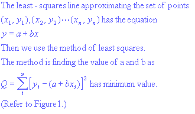
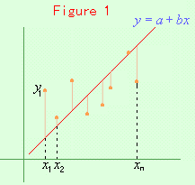
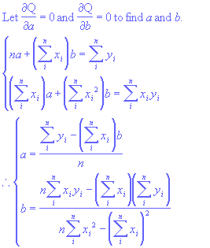

The Least-Squares Line
Introduction


Applet
1. Drag the red line and rotate it to change a.
2. Drag y-intersept of the red line to change b.
3. Find the value of a and b so that the sum of the squares becomes minimum.
Finding the value of a and b
